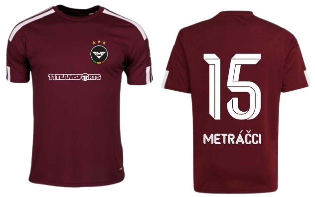
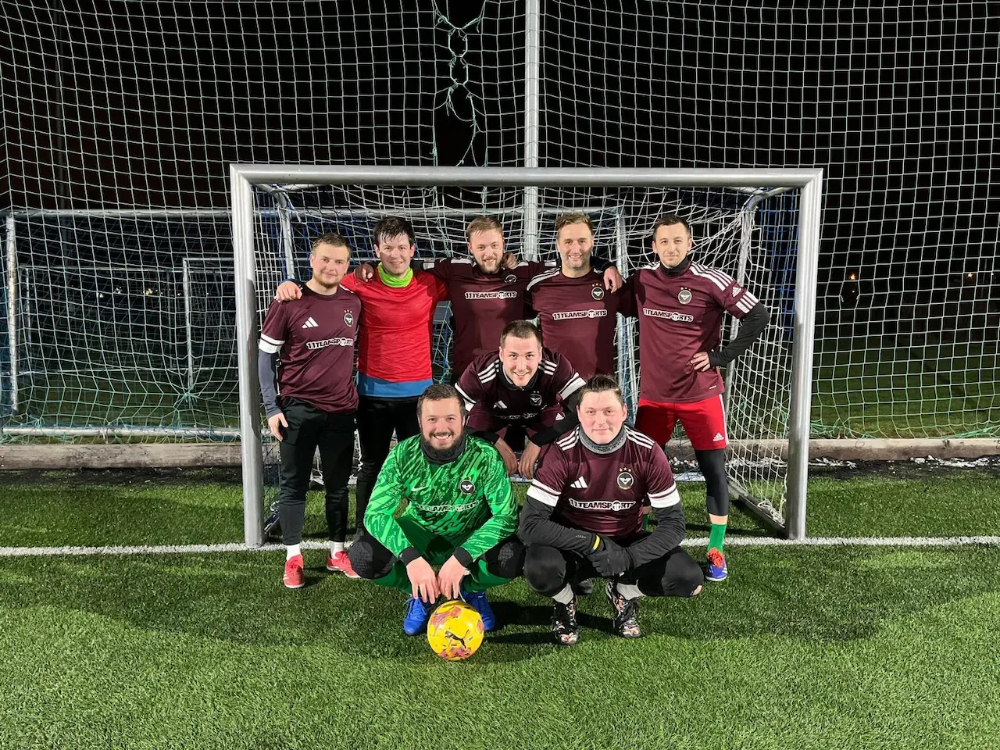

Tabulka & Výsledky
SEZÓNY METRÁČKŮ
0.
Místo
0
Výhry
0
Remízy
0
Prohry
0:0
Skóre
0
Bodů
Tabulka skupiny — Hanspaulská liga 6D · Jaro 2026
| # | Tým | Z | V | R | P | Sk. | Body |
|---|---|---|---|---|---|---|---|
| 1 | Horoušany FC | 0 | 0 | 0 | 0 | 0:0 | 0 |
| 2 | Prtzalona C.F. | 0 | 0 | 0 | 0 | 0:0 | 0 |
| 3 | Gambrinus VH | 0 | 0 | 0 | 0 | 0:0 | 0 |
| 4 | Karety Praha FC | 0 | 0 | 0 | 0 | 0:0 | 0 |
| 5 | Kunratický vlci | 0 | 0 | 0 | 0 | 0:0 | 0 |
| 6 | Trigonum Anale FC | 0 | 0 | 0 | 0 | 0:0 | 0 |
| 7 | Metráčci ★ | 0 | 0 | 0 | 0 | 0:0 | 0 |
| 8 | Praga Calcio CC | 0 | 0 | 0 | 0 | 0:0 | 0 |
| 9 | Prastará dáma | 0 | 0 | 0 | 0 | 0:0 | 0 |
| 10 | Catchers SC | 0 | 0 | 0 | 0 | 0:0 | 0 |
| 11 | Medvědi A | 0 | 0 | 0 | 0 | 0:0 | 0 |
| 12 | Friends Prague | 0 | 0 | 0 | 0 | 0:0 | 0 |
* Sezóna startuje 17. 3. 2026 — tabulka bude průběžně aktualizována.
Výsledky Metráčků — Jaro 2026
Horoušany FC — Metráčci
0:9
Metráčci — Prtzalona C.F.
0:0
Gambrinus VH — Metráčci
0:0
Metráčci — Karety Praha FC
0:0
Kunratický vlci — Metráčci
0:0
Trigonum Anale FC — Metráčci
0:0
Metráčci — Praga Calcio CC
0:0
Prastará dáma — Metráčci
0:0
Metráčci — Catchers SC
0:0
Medvědi A — Metráčci
0:0
Metráčci — Friends Prague
0:0
Přesné výsledky všech kol: PSMF profil ↗
Sezóna teprve začíná — výsledky přibudou po odehrání zápasů.
Sezóna Jaro 2026
PROGRAM ZÁPASŮ
| Kolo | Datum & Čas | Zápas | Hřiště | H/A | Výsledek |
|---|---|---|---|---|---|
| 1. KOLO | Út 17. 3. 2026 · 20:30 | HOROUŠANY FC — METRÁČCI | BĚCHOVICE | AWAY | 0:9 |
| 2. kolo | St 25. 3. 2026 · 20:30 | Metráčci — Prtzalona C.F. | MOTORLET | Home | |
| 3. kolo | St 1. 4. 2026 · 20:45 | Gambrinus VH — Metráčci | ŠTĚRBOHOLY | Away | |
| 4. kolo | St 8. 4. 2026 · 18:00 | Metráčci — Karety Praha FC | HRABÁKOVA | Home | |
| 5. kolo | St 22. 4. 2026 · 20:45 | Kunratický vlci — Metráčci | ŠTĚRBOHOLY | Away | |
| 6. kolo | St 29. 4. 2026 · 19:30 | Trigonum Anale FC — Metráčci | TEMPO | Away | |
| 7. kolo | Út 5. 5. 2026 · 20:45 | Metráčci — Praga Calcio CC | ČECHIE SMÍCHOV | Home | |
| 8. kolo | Út 19. 5. 2026 · 18:00 | Prastará dáma — Metráčci | HRABÁKOVA | Away | |
| 9. kolo | Út 26. 5. 2026 · 19:15 | Metráčci — Catchers SC | MALEŠICE | Home | |
| 10. kolo | Út 2. 6. 2026 · 20:45 | Medvědi A — Metráčci | PRAŽAČKA | Away | |
| 11. kolo | Út 16. 6. 2026 · 20:30 | Metráčci — Friends Prague | MOTORLET | Home |
Tým
SOUPISKA HRÁČŮ

1

#1
Robin Zimmerling
Brankář
2

#2
Ondřej Křižka
Obránce
3

#3
Jaroslav Ptáček
Obránce
4

#4
Kryštof Dukát
Záložník
5

#5
Jurij Fedoryčak
Záložník
7

#7
Matěj Ptáček
Záložník
8

#8
Štěpán Hrazdíra
Záložník
9

#9
Václav Švestka
Útočník
10

#10
Ondřej Höpfler
Útočník
11

#11
Filip Čihák
Útočník
12

#12
Václav Kverka
Záložník
14

#14
Vojtěch Selix
Záložník
15

#15
David Šindelář
Obránce
16

#16
Jan Škoda
Obránce
17

#17
Aleš Kolek
Záložník
18

#18
Dominik Rejhon
Obránce
19

#19
Filip Olejník
Útočník
20

#20
Josef Ptáček
Záložník
21

#21
Martin Časar
Obránce
22

#22
Martin Hladík
Záložník
23

#23
Tomáš Nosek
Útočník
24

#24
Vladimír Straka
Obránce
Data
STATISTIKY TÝMU
⚽ Top střelci · Jaro 2026
Počet zápasů
Góly
2
Ondřej Křižka
0 zápasů
0
5
Jurij Fedoryčak
0 zápasů
0
3
Jaroslav Ptáček
0 zápasů
0
7
Matěj Ptáček
0 zápasů
0
4
Kryštof Dukát
0 zápasů
0
7
Štěpán Hrazdíra
0 zápasů
0
Fotky ze zápasů
GALERIE

Metráčci FC — týmová fotka
O nás
HISTORIE KLUBU
FC Metráčci vznikli v roce 2012 jako parta kamarádů z Prahy, kteří chtěli hrát fotbal pro radost. Co začalo jako neformální kickání na hřišti, se brzy proměnilo v pravidelné tréninky a první přihlášení do Hanspaulské ligy.
Za roky existence klub prošel mnoha proměnami — přicházeli noví hráči, měnily se soupisy, ale jedno zůstalo stejné: parta lidí, kteří to dělají s láskou k fotbalu.
2021
Založení klubu
Parta přátel zakládá FC Metráčci. První tréninky na Hanspaulce, žádný dres, jen chuť hrát.
2014
První sezóna v lize
Historicky první zápis do Hanspaulské ligy. Porážky, výhry, ale hlavně — zábava a nové zkušenosti.
2018
Nové dresy
Klub dostává profesionálnější tvář — nové dresy v černo-zlatých barvách, které nosíme dodnes.
2022
Postup do vyšší třídy
Po sérii dobrých výsledků se Metráčci probojovávají do vyšší soutěžní třídy. Největší úspěch dosud.
2026
Dnes
Nová sezóna, nové cíle. FC Metráčci jsou stále tady — a pořád jedou naplno.